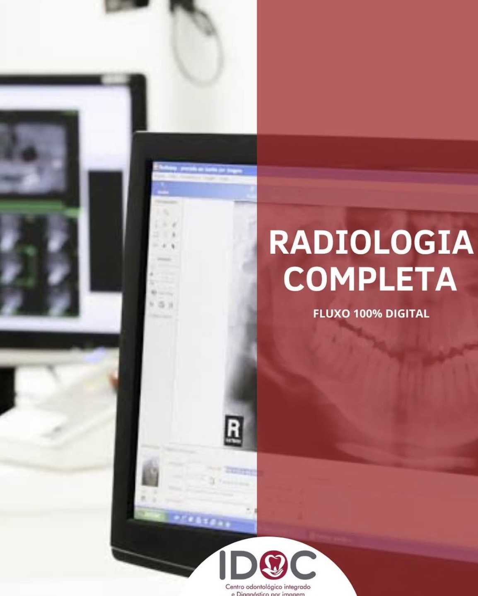
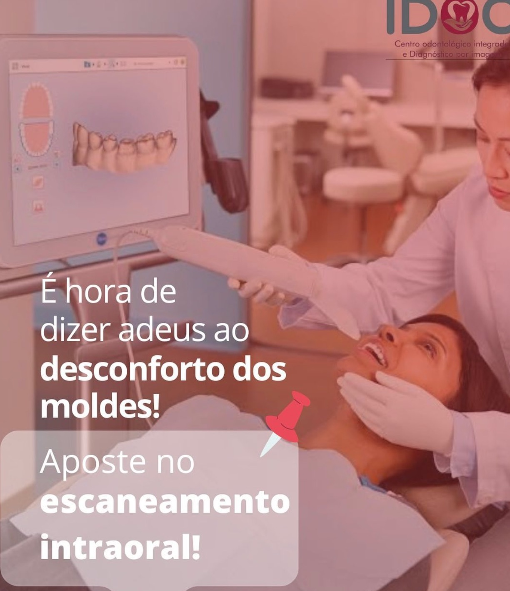
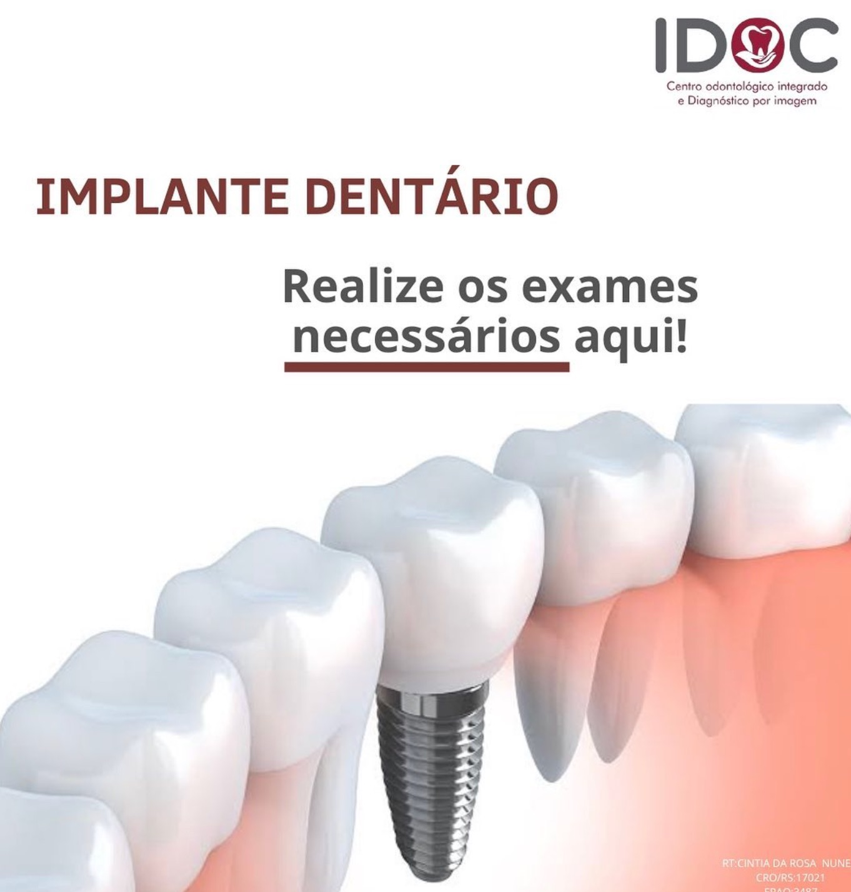
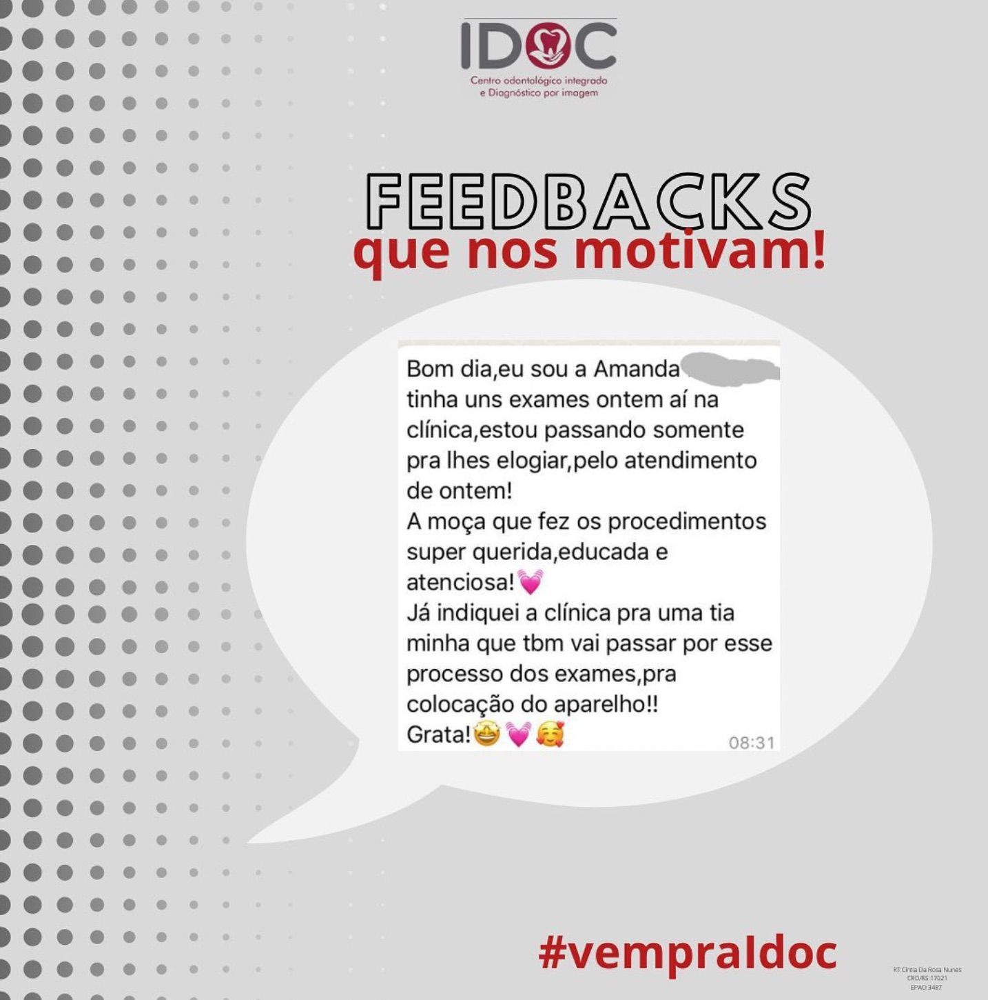

Sistema de digitalização mais avançado da atualidade para o seu diagnóstico.
Agende seu Exame
Oferecemos um fluxo 100% digital, garantindo precisão absoluta e conforto para você.
Conhecer Serviços
Aposte no escaneamento intraoral para um procedimento rápido e sem náuseas.
Saiba MaisNa IDOC - Radiologia Odontológica Digital, unimos tecnologia de ponta e um atendimento humanizado para oferecer os melhores diagnósticos por imagem de Santiago e região.
Agendamento via WhatsApp, atendimento super rápido e resultados disponibilizados digitalmente para você e seu dentista com total praticidade.
Nossa equipe é treinada para realizar exames com excelência em crianças, adultos e idosos, garantindo conforto e segurança em cada etapa.
O planejamento do sorriso perfeito começa com exames precisos. Utilizamos equipamentos que geram imagens de altíssima resolução.
Estrutura completa para atender às necessidades do seu tratamento odontológico com tecnologia 100% digital.
Realizamos radiografias panorâmicas, periapicais, cefalométricas, entre outras. Todas com fluxo 100% digital, garantindo menor exposição à radiação e maior precisão.
A substituição perfeita para as antigas massas de moldagem. O escâner cria um modelo 3D colorido e preciso da sua boca em poucos minutos, com total conforto.
Vai usar aparelho? Realizamos a documentação ortodôntica completa (radiografias, fotos e modelos virtuais) necessária para o planejamento do seu ortodontista.

Tomografias computadorizadas fundamentais para avaliar a estrutura óssea antes da colocação de implantes dentários. Segurança essencial para o procedimento.
O carinho e a satisfação de nossos pacientes são o nosso maior compromisso.

"Estou passando somente pra lhes elogiar pelo atendimento de ontem! A moça que fez os procedimentos super querida, educada e atenciosa! Já indiquei a clínica..."
Paciente IDOC
#vempraldoc